MediaMarkt Turquía
Rubro: Tienda online (eCommerce) · www.mediamarkt.com.tr
Por qué es referente: Figura entre los sitios de compras más visitados según la fuente citada.
Fuente: Ahrefs · Top 10 sitios de compras en Turquía (jul. 2025)
Compararlo con los demás líderesFotos
- Computadora: 2026-10-19
- Celular: 2026-10-19
- Computadora, categoría: 2026-10-19
- Computadora, ficha: 2026-10-19
- Computadora_carrito: 2026-10-19
- Celular, categoría: no se pudo sacar
- Celular, ficha: 2026-10-19
- Celular_carrito: 2026-10-19
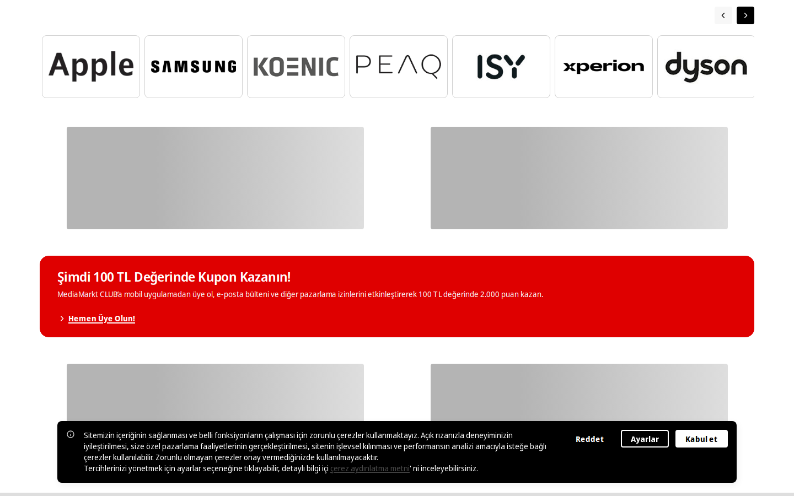
Sus partes, una por una
Header · Computadora
MediaMarkt Turquía100 % del ancho · 120 px de alto
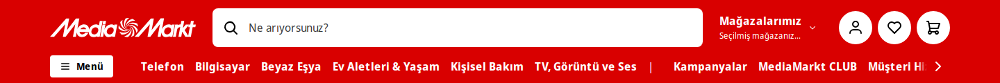
Logo · Computadora
MediaMarkt Turquía15 % del ancho · 28 px de alto
Buscador · Computadora
MediaMarkt Turquía49 % del ancho · 56 px de alto
Menú · Computadora
MediaMarkt Turquía90 % del ancho · 48 px de alto
Banner principal · Computadora
MediaMarkt Turquía86 % del ancho · 112 px de alto
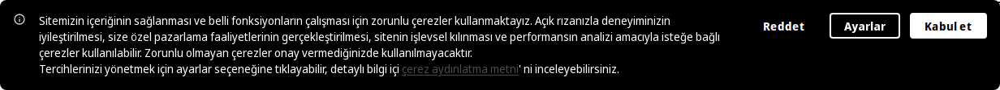
Pie de página · Computadora
MediaMarkt Turquía100 % del ancho · 2305 px de alto
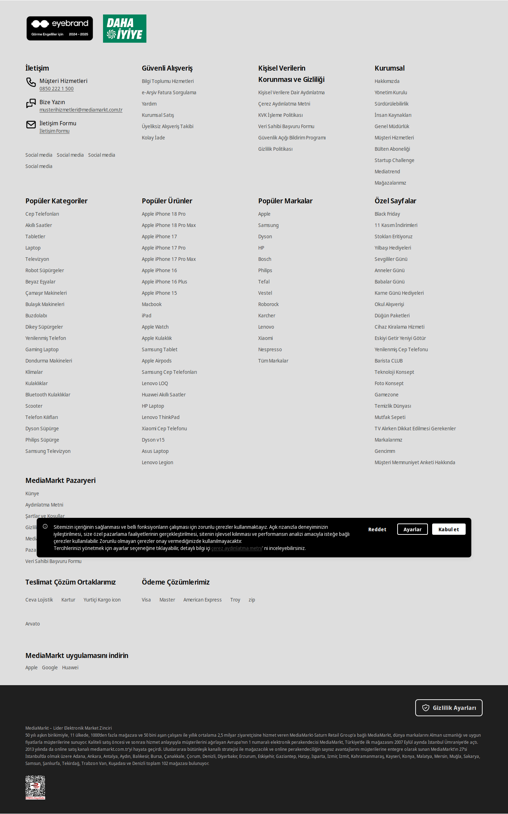
Filtros · Computadora
MediaMarkt Turquía21 % del ancho · 6684 px de alto
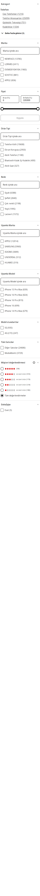
Tarjetas de producto · Computadora
MediaMarkt Turquía67 % del ancho · 464 px de alto · bordes 8 px
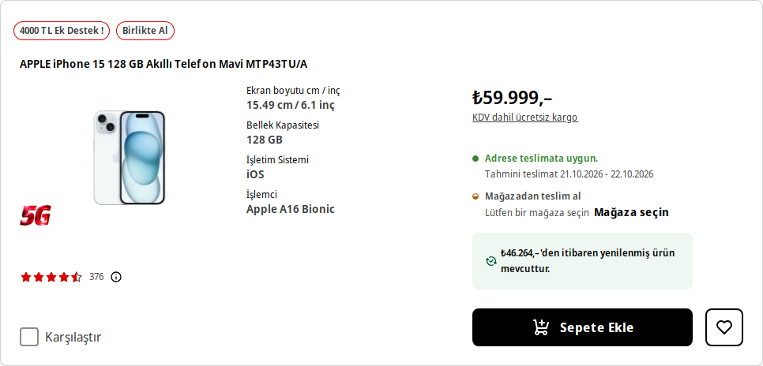
Fotos del producto · Computadora
MediaMarkt Turquía37 % del ancho · 402 px de alto
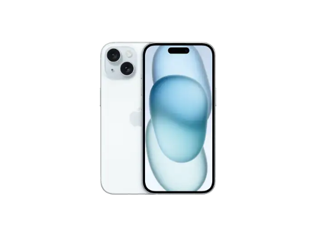
Botón de compra · Computadora
MediaMarkt Turquía12 % del ancho · 48 px de alto · bordes 8 px
Botón de finalizar compra · Computadora
MediaMarkt Turquía3 % del ancho · 48 px de alto · bordes 15984 px
Header · Celular
MediaMarkt Turquía100 % del ancho · 144 px de alto
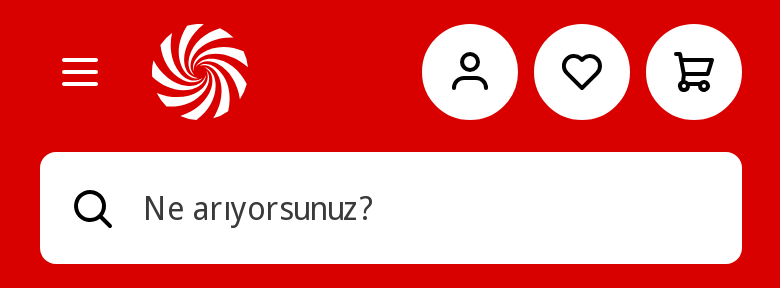
Logo · Celular
MediaMarkt Turquía12 % del ancho · 48 px de alto
Buscador · Celular
MediaMarkt Turquía90 % del ancho · 56 px de alto
Banner principal · Celular
MediaMarkt Turquía84 % del ancho · 376 px de alto
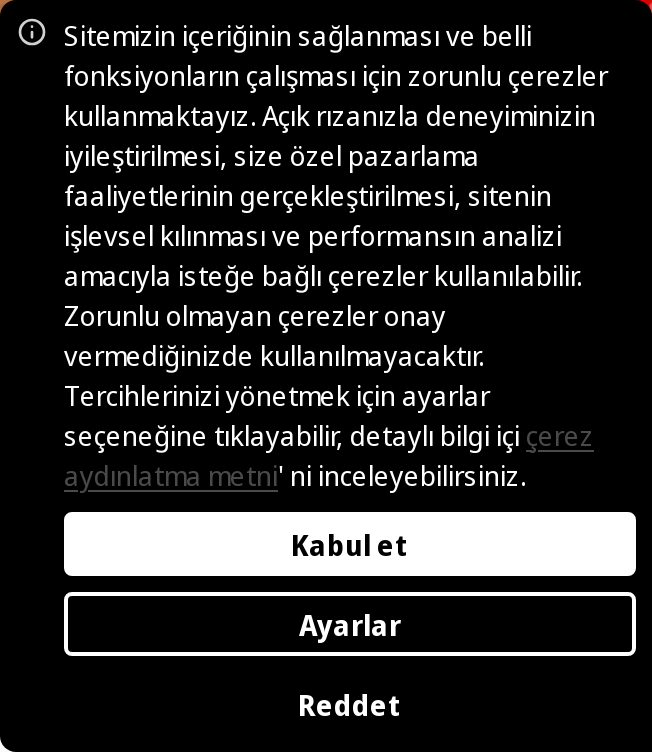
Pie de página · Celular
MediaMarkt Turquía100 % del ancho · 1921 px de alto
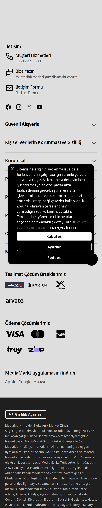
Fotos del producto · Celular
MediaMarkt Turquía69 % del ancho · 201 px de alto
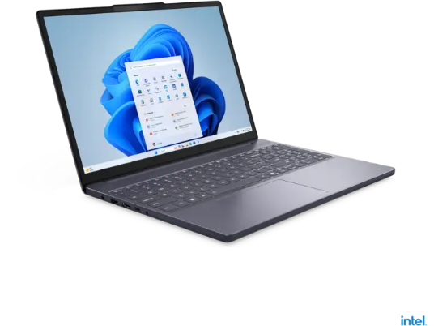
Botón de compra · Celular
MediaMarkt Turquía50 % del ancho · 32 px de alto · bordes 4 px
Botón de finalizar compra · Celular
MediaMarkt Turquía12 % del ancho · 48 px de alto · bordes 15984 px